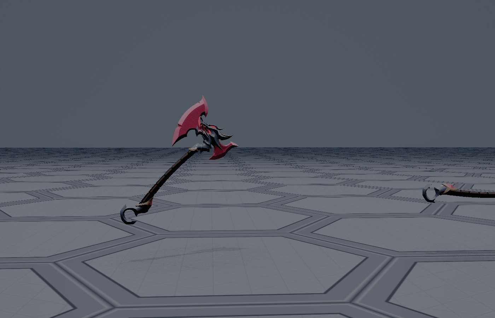
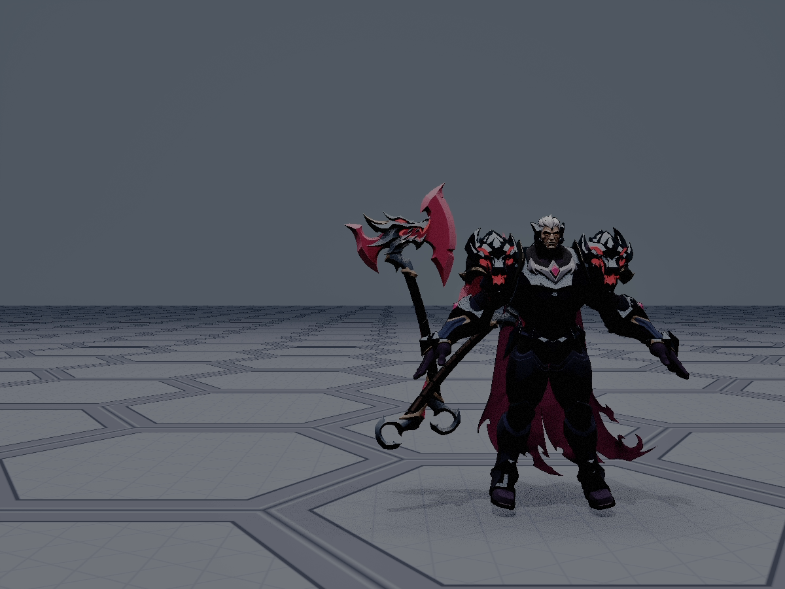
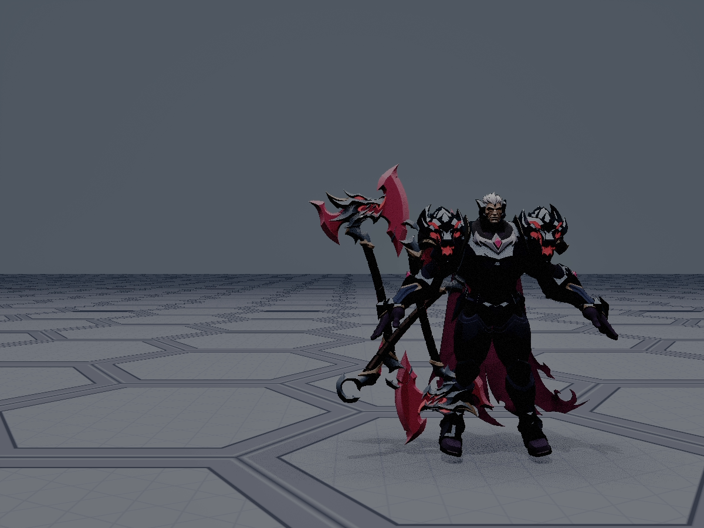
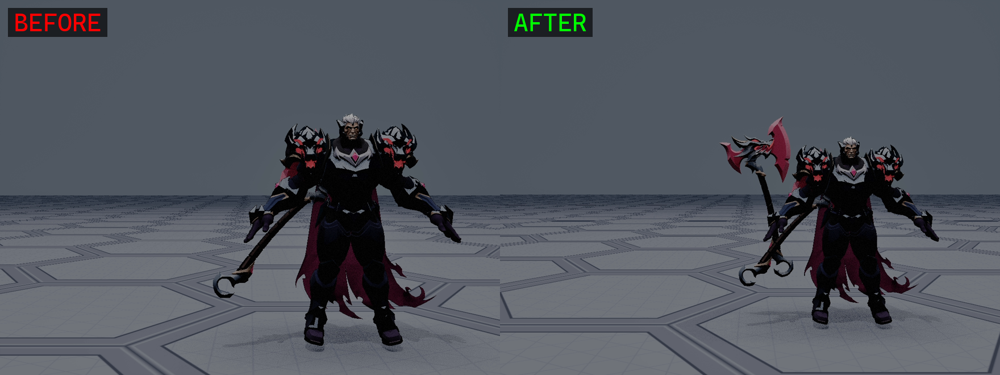
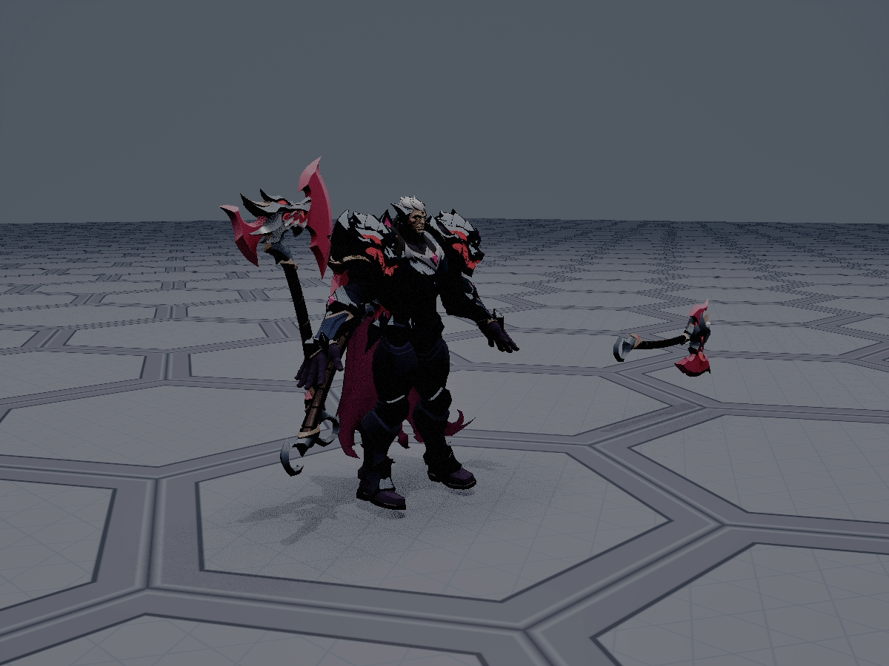
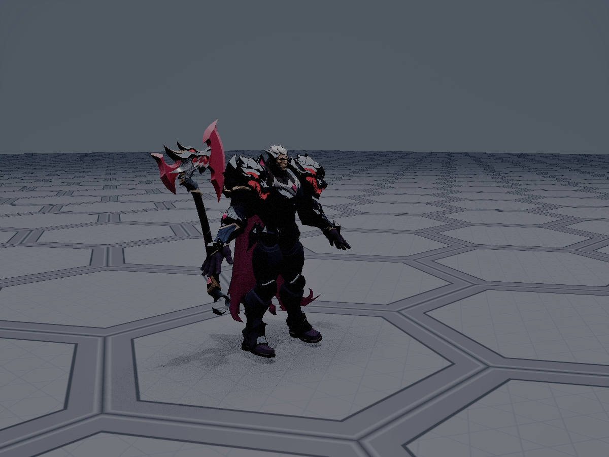

BP_DariusCharacter / SK_Darius_GodKing / SM_Darius_GodKing_Axehand_rSocket 的 6 个数字，几何 / 材质 / 材质槽一律未改。
现场判断是「之前修角色身下斧头投影黑影时，误把手上斧头的斧头主体一起隐藏或删除了」。这个假设被数据直接否掉——武器几何从头到尾一次都没被动过。
| 对象 | 顶点 | 面 | 局部包围盒（m） |
|---|---|---|---|
2XKO 源 FBX darius_godking_mesh_LOD0.007 | 5661 | 4698 | 0.210 × 1.718 × 0.770 |
Saved/Exported_Weapons/SM_Darius_GodKing_Axe.fbx | 5661 | 4698 | 0.210 × 1.718 × 0.770 |
UE 资产 SM_Darius_GodKing_Axe（LOD0） | 5668 | — | 0.210 × 1.718 × 0.770 |
沿长轴（Y）的顶点分布直方图 逐 bin 完全一致；UE 侧多出 7 个顶点是 UV/法线接缝拆分所致。三者的包围盒一字不差——大刃（占 Z 全高 77cm 的那部分几何）始终在资产里。
| 资产 | 混合模式 | 双面 | 不透明遮罩 |
|---|---|---|---|
M_Darius_Master（所有 MI 的父材质） | BLEND_OPAQUE | False | 无 |
MI_Darius_Axe | 继承 OPAQUE | 继承 | 无 overrides |
把同一把 SM 单独摆进关卡渲染 → 完整斧头（大双刃 + 黑握柄 + 尾钩 + 粉色发光），见下图左半。
把同一 SM 用手部的世界变换摆到场上、且场里没有任何角色遮挡：

| 实验 | 画面变化 | 推论 |
|---|---|---|
隐藏 WeaponAxe 组件（角色 BP 内） | 手中「杆 + 小钩」依旧存在 | 该组件当前贡献的可见像素为 0（被身体吃掉） |
| 隐藏就地摆放的同 SM clone | 手中「杆 + 小钩」消失 | 可见部分用的正是同一资产、同一变换 |
两者使用同一把 SM、同一个世界变换，只是一个在角色体内、一个在体表——从而把「几何缺失」彻底排除，锁定为「位置错误 + 被遮挡」。
用 UE 自身的 Transform.transform_location() 把斧头局部关键点投到世界（角色面朝 −Y，右手在 Y≈−71）：
| 斧头局部点 | 世界坐标 | 位置判读 |
|---|---|---|
| 局部 Y = +86（大刃端） | (31.4, −3.7, 167.5) | X=31 / Y=−3.7 / Z=167.5 → 落在躯干内部（躯干 Z 117~201，Y ±31） |
| 局部 Y = −86（尾钩端） | (−14.2, −122.6, 52.2) | 体前 1.2m、膝下——就是截图里露出来的那截「月牙」 |
骨骼 head | (5.5, 0.0, 188.6) | — |
骨骼 hand_r | (7.5, −70.9, 118.3) | 与 weapon 组件原点重合 |
blender_split_weapon.py 用错轴）grip_z = min_v.z + size_v.z * 0.35 # ← 用了 Z 轴
这把斧头的长轴是 Y（172 cm），Z 方向只有 77 cm（刃高）。所谓「全长 35% 处」算出来的是一个毫无几何意义的包围盒中部点。实际后果：
Y = 0）。Y ∈ [−43, 0]，尾钩在 Y ∈ [−86, −43]，大刃在 Y ∈ [0, +86]。hand_rSocket.relative_rotation 被设为 (pitch 90, yaw 0, roll 0)，实测世界旋转为 (6.67, 165.06, −137.52)——完全由手骨自身朝向决定，从未按「刃朝上、刃面朝侧」设计。这个方向刚好把大刃送进躯干。
| 属性 | 修复前 | 修复后 |
|---|---|---|
hand_rSocket.relative_rotation | (90, 0, 0) | (−106.334, −70.982, 9.342) |
hand_rSocket.relative_location | (0, 0, 0) | (0.18965, 0.10080, 0.00982)（bone 空间，≈21.5 cm 世界） |
hand_rSocket.relative_scale | (0.01, 0.01, 0.01) | 不变（抵消根骨骼 100× 米→厘米换算） |
WeaponAxe 组件相对变换 | (0,0,0) / (0,0,0) | 不变 |
| 几何 / 材质 / 材质槽 / BP 结构 | — | 未改动 |
改前已把 SK_Darius_GodKing.uasset / BP_DariusCharacter.uasset 备份到 Saved/Backup_axe_fix/。
MathLibrary.make_rot_from_xy 构造成目标世界朝向 Wt。relRot = (0,0,0) → W = (47.0954, -97.7151, -80.1788) relRot = (0,90,0) → W = (42.1291, 68.9880, 80.9917) 假设 World = Compose(Parent, Rel) : 残差 5.508537 假设 World = Compose(Rel, Parent) : 残差 0.000000 ← 成立结论：socket 的相对旋转按
World = Compose(Rel, Parent) 组合，与直觉相反。compose_rotators + get_forward/right/up_vector，因为该版本的 MathLibrary 没有 invert_rotator / rotate_vector / quat_from_rotator），残差收敛到 1.3e-07，并由重新 spawn 实测复核（实测世界旋转 (−0.012, 0.0084, −105.0005) vs 目标 (0,0,−105)）。get_right_vector(Rs) × 0.215 写入 socket 的 relative_location（bone 空间 1 单位 = 1 cm 世界 / 100）。

由 A/B 结果反证：UE 局部 +Y 端是大刃（FBX 因一次轴转换语义翻转，直方图与 UE 局部轴正负号相反——这是本次最容易踩错的点）。



ABP_Unarmed 驱动），大刃 / 握柄 / 尾钩完整。| # | 指标 | 期望 | 实测 | 判定 |
|---|---|---|---|---|
| 1 | 几何完整性：UE LOD0 顶点数 | ≈5661（含 UV 拆分） | 5668 | PASS |
| 2 | 斧头局部 +Y 与世界上向夹角 | ≈15°（刃朝上） | 15.0° | PASS |
| 3 | 斧头最低点世界 Z | ≥ 0（不得插地） | +43.1 cm | PASS |
| 4 | 斧头世界 AABB | 完整包住刃 + 柄 + 钩 | X −3~18 / Y −147~−28 / Z 43~229 | PASS |
| 5 | 世界缩放 | 1.0（21×172×77 cm） | 1.0 | PASS |
| 6 | 材质槽 | MI_Darius_Axe | 一致 | PASS |
| 7 | 姿态求解残差 | < 1e-4 | 1.3e-07 | PASS |
| 8 | 渲染硬证据：大刃可见 | 可见 | 见 §4 对比图 | PASS |
武器不做成角色骨骼网格的一部分，而是独立的 StaticMesh / SkeletalMesh，由角色蓝图里一个单独组件承载。
| 角色骨架里放武器（不推荐） | 独立组件 + socket（标准做法） |
|---|---|
| 换武器要重导整个角色网格 | 换武器只需换组件上的 Mesh 引用 |
| 武器材质/碰撞/投影和身体绑死 | 武器可单独设材质、碰撞、阴影 |
| 无法做掉落 / 拾取 / 换装 | 可 detach、丢到地上、被其他角色拾取 |
| 描边/外发光等后处理壳会连带复制武器 | 不存在连带复制问题 |
Darius 的武器天然满足这条（SM_Darius_GodKing_Axe 是独立 StaticMesh，挂在 WeaponAxe 组件上）。
weapon_jnt_r，且它正好落在手心：世界 (7.590, −70.610, 117.964) vs hand_r (7.549, −70.906, 118.293)）。用 hand_r 也可以，但武器骨通常带有动画师预设的持握偏移。(0, 90, 0)），而不是一串试出来的魔数。relative_transform 保持单位值，把「怎么握」全部收敛在 socket 里——一个地方管一件事。relative_scale 上（0.01），保持与其他 socket 一致。StaticMesh 的碰撞不要用复杂碰撞（per-poly）：代价高、形状不可控。标准做法是给武器单独建一个 Simplicity Box/Capsule，或者干脆让武器 Collision Enabled = No Collision。Socket（本资产已有 Socket_Blade_Tip / Socket_Blade_Edge / Socket_Pommel），运行时在这些 socket 之间做 Sweep/Box Trace；Weapon trace channel），避免和移动碰撞互扰。Collision Enabled 用 No Collision 或 Query Only，别用 Physics Body（除非要做物理武器）。Cast Shadow 保持 True（武器需要投影，否则失去立体感）。Cast Shadow = False、Cast Dynamic Shadow as Masked、或 Hidden in Game + Visible in Scene Capture。BLEND_MASKED 材质 OpacityMask=0 时自身不可见，却仍按实体投出完整阴影；必须显式开 cast_dynamic_shadow_as_masked（Python 属性名没有 b_ 前缀）。Set Cull Distance 或 LOD 的 shadow flag，而不是整体关投影。凡是要「永久消失」的几何，必须在 Blender/Maya 里删面，不能只靠材质隐藏——尤其是带描边/外发光壳（inverted hull）的模型，外壳是整体复制品，材质隐藏挡不住它。本项目 blender_22_strip_all.py 的做法（KDTree 找斧头顶点 → 删面 → 再删本体对象）是正确的，验收指标（全部网格 z < −0.02 的顶点数为 0）也是正确的。
| 维度 | 标准做法 | 本项目现状 | 差距 | 改进方向 |
|---|---|---|---|---|
| 武器 pivot | 落在握持点，长轴对齐 +X | 落在刃根（blender_split_weapon.py 用 Z 轴算 35%） |
严重 | 重导一次 SM_Darius_GodKing_Axe，pivot 移到握柄中点、长轴转到 +X。当前是用 socket 的 21.5cm 偏移临时补偿，属于 workaround |
| socket 父骨骼 | weapon_jnt_r（武器专用骨） |
hand_rSocket 挂在 hand_r |
中 | 改用 weapon_jnt_r；实物测两者距离仅 0.5 cm，切换成本低 |
| socket 数值来源 | 常量、可读、可由 pivot 契约推出 | 试出来的魔数 (−106.334, −70.982, 9.342) + 21.5cm 偏移 |
中 | 修完 pivot 后重算，目标是 (0, 90, 0) 这类可读值 |
| 武器碰撞 | No Collision / 简单碰撞 + socket 做 Trace | 导入默认（combine_meshes 默认生成；未显式设置） |
中 | 显式设 Collision Enabled = No Collision，攻击判定走 socket Sweep（Socket_Blade_Tip/Edge/Pommel 已埋好） |
| 投影 | 组件级开关控制 | cast_shadow=True；曾用 M_Invisible 糊（已改为 DCC 删几何） |
良好 | 保持；文档化「不要用透明材质代替删几何」 |
| 组件 vs 骨骼网格 | 武器独立组件 | 已独立（WeaponAxe StaticMeshComponent） |
良好 | — |
| socket 相对缩放 | 统一约定 | (0.01,0.01,0.01) 抵消根骨骼 100× |
中 | 100× 缩放写在骨架里是隐患，建议在 DCC 导出时把单位统一成厘米，去掉这个补偿 |
| 验收方式 | 可复现的数值 + 渲染双证据 | 本次已建立（见 §5），但历史上靠「看起来差不多」交付过 | 中 | 把本次的数值验收脚本固化为 Scripts/axe_verify.py，纳入改动清单 |
| 动画蓝图 | 角色专用 ABP（目标骨架 = SK_Darius_GodKing_Skeleton） |
CharacterMesh0.anim_class = ABP_Unarmed（UE 假人通用 ABP，骨架不匹配） |
严重 | 按 AGENTS.md §4-B3 建 ABP_Darius（duplicate ABP_Unarmed → 改 target_skeleton → 改写 sequence 引用），并在 BP_DariusCharacter 指定 anim_class。武器 socket 姿态届时需按持斧 Idle 微调 |
axe_verify.py（本次 8 条指标）作为武器装配的回归验收；任何 socket / mesh 改动后必跑。SM_Darius_GodKing_Axe：pivot → 握柄中点，长轴 → +X，把 socket 魔数收敛成常量。hand_r 换到 weapon_jnt_r。No Collision，把攻击判定切到 socket Sweep。relative_scale = 0.01 这一层补偿。ABP_Darius 后，按实际持斧 Idle 调整 socket（当前姿态是在 bind/A-pose 下定的；动画播放后手部朝变化，socket 需按动画微调）。# 1) 资产审计（几何/材质/材质槽/组件装配）
uv run --no-project python Scripts/ue_remote.py Scripts/axe_01_audit.py
# 2) 几何硬验证：源 FBX vs 导出 FBX（直方图逐 bin 对比）
"C:/Program Files/Blender Foundation/Blender 5.2/blender.exe" -b -P Scripts/axe_03_geom_audit.py \
-- "E:/UE/Assets/Darius_God_king/God King Darius 2XKO.fbx" "SOURCE"
# 3) 标定 socket 旋转组合顺序（World = Compose(Rel, Parent)）
uv run --no-project python Scripts/ue_remote.py Scripts/axe_19_calibrate.py
# 4) 落盘修复 + 8 条指标验收 + 出终图
uv run --no-project python Scripts/ue_remote.py Scripts/axe_21_apply_and_verify.py
# 5) 清理临时 actor，恢复关卡基线（7 个 actor）
uv run --no-project python Scripts/ue_remote.py Scripts/axe_22_cleanup.py
| 坑 | 表现 | 规避 |
|---|---|---|
unreal.Rotator 位置参数顺序 |
是 (roll, pitch, yaw)，不是 (pitch, yaw, roll) | 一律用关键字：unreal.Rotator(pitch=.., yaw=.., roll=..)。这解释了历史上多张「拍歪」的截图 |
| socket 相对旋转的组合顺序 | 实测是 World = Compose(Rel, Parent)，与直觉相反（残差 0.000000 vs 5.508537） |
改 socket 前先做一次 (0,0,0) / (0,90,0) 两点标定 |
MathLibrary 函数缺失 |
该版本没有 invert_rotator / rotate_vector / quat_from_rotator / rotator_from_quat |
改用「坐标下降 + compose_rotators + get_forward/right/up_vector」的纯数值求解，残差可做到 1e-7 |
编辑器 HighResShot |
会静默失败（无日志、无文件）；且一次运行只认最后一条；文件落地有 1~4 分钟延迟 | 改用 SceneCapture2D + RenderingLibrary.export_render_target（离屏、稳定、可一次拍多张）。输出是无扩展名的 HDR，需 ffmpeg 转 LDR：ffmpeg -i CAP_side -vf "zscale=t=linear,tonemap=hable,zscale=t=bt709:m=bt709:r=tv,format=yuv420p" out.png |
直接改组件的 relative_location |
会让组件脱离 socket 挂载，世界变换退化成单位矩阵 | 握持偏移写在 socket 上；组件相对变换保持单位值 |
| FBX↔UE 的局部轴语义翻转 | Blender 直方图显示大刃在 −Y，UE 里实际在 +Y（包围盒 Y 对称，数值上分辨不出） | 用「无遮挡渲染 + 已知机位」反证，不要靠数值推断轴的正负 |
EditorAssetLibrary.unload_asset |
该版本不存在 | 复核存盘值直接重新 unreal.load_asset 后读属性即可 |